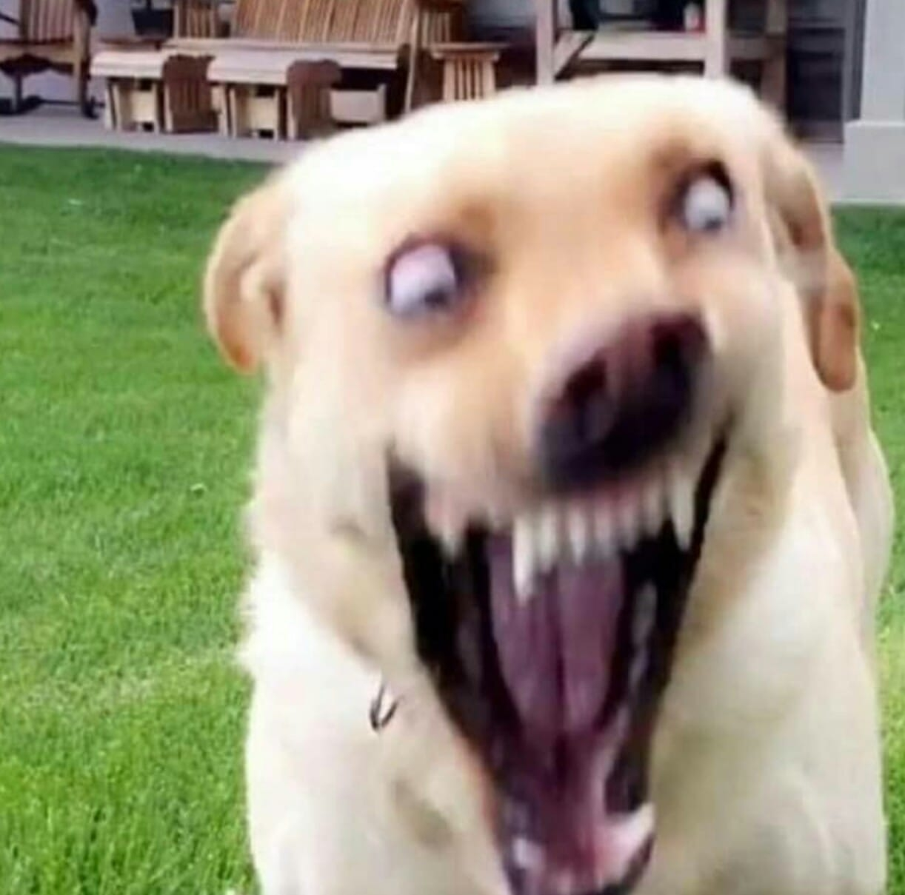

Este exemplo mostra diferentes formas de usar as tags <img> e <video>, incluindo o uso de <figure> e <figcaption> para agrupar mídias com legendas.
Descrição
As tags abordadas são:
<img>: Usada para inserir imagens na página.
<video>: Usada para inserir vídeos na página.
<figure>: Usada para agrupar mídias (imagens, vídeos, gráficos) com uma legenda.
<figcaption>: Usada para adicionar uma legenda ao conteúdo dentro de <figure>.
Exemplos Práticos
Imagem usando os atributos img, figure e figcaption
Uma iamgem agrupada com legenda descritiva

Figura1: Cachorro
Video com Legenda usando <figure> e <figcaption>
Incorporação de Videos do Youtube usando a tag <iframe>
Neste exemplo vamos usar dois videos do YouTube lado a lado usando a tag <iframe>
5 Vídeos Assustadores e misteriosos de muito Terror Capturados por CâmeraCute baby animals Videos Compilation cute moment of the animals #15 Cutest Animals 2023